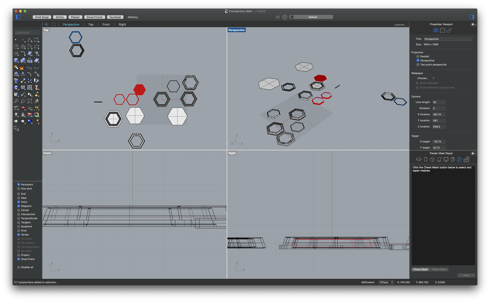
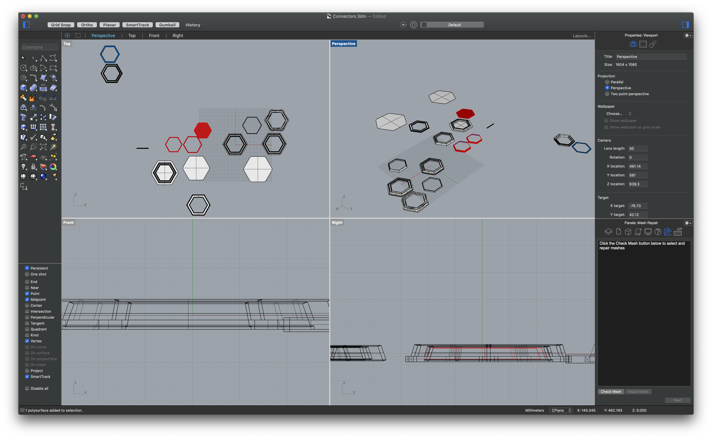
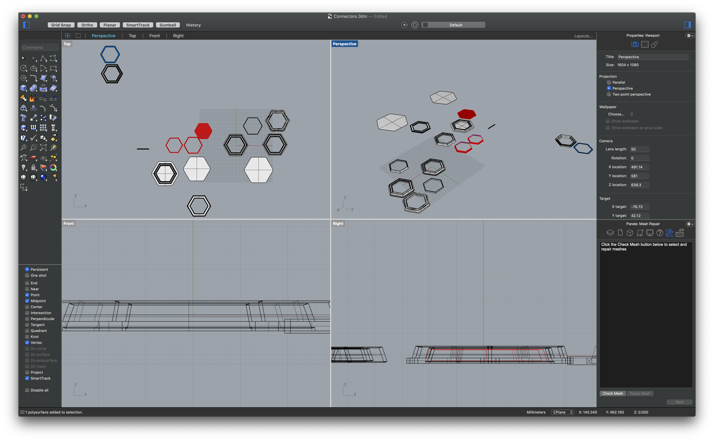

1) Make a lamp using measurements of lamp innards.
Picking up from where I left off last week, I had to change some measurements due to change of plans in the actual lamp I was going to use.
From the new measurements, I starting by laying out the Farsi letter “و” onto the surfaces by unrolling them from the master shape. After that, I created the middle joint that would connect the top my top and bottom pieces by splitting another hexagon at the intersection of the two pieces. I continued by creating yet another hexagon to use at the top piece connecting my lamp innards to the lamp shade. Screenshots below are pictures of my many failed attempts at each piece. Here’s a link to all failed 3dm, .stl, and gcode) files!

After many iterations, I was able to arrive at the solution shown below! Here’s a link to 3dm, .stl, and gcode) files!
2) Molding and casting (pt 1/2)!
Since we’re asked to get started on creating a 2 part mold and cast using that mold four times, I decided to design a candle holder for the Trader Joe’s candles I really like! The challenge I’m trying to solve is that they can get extremely hot, and plaster cast seems to resolve that issue.
Continuing on my trend of using polygons, I designed a simple holder shown below with the correct measurements. Here’s the 3dm file.

 
